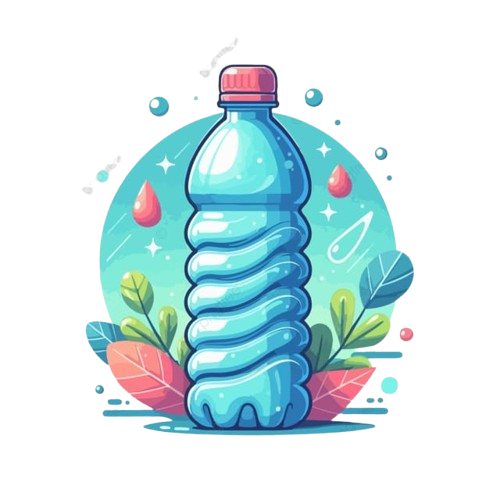

-
Manter uma hidratação adequada é fundamental para o bom funcionamento do corpo humano. A água é responsável para que as pessoas tenham uma boa digestão, melhorem a circulação, fortaleçam os músculos e, ainda, contribui com o cérebro. Esse precioso líquido leva até as células oxigênio e nutrientes, como sais minerais, e atua para que toxinas sejam eliminadas por meio do suor e da urina. Cerca de 70% do corpo humano é composto por água.
Alguns hábitos podem auxiliar a manter uma boa hidratação, como sempre que possível ter uma garrafinha com água por perto. “Tenha o hábito de carregar uma garrafinha com água consigo e aumente o consumo gradativamente”, recomenda a conselheira do CRN-8. Para quem tem mais dificuldade em consumir a bebida, a nutricionista aconselha que saborizem o liquido “Saborizar a água com frutas, especiarias e ervas também é um ótimo estímulo para se hidratar”, destaca.
-

A nutricionista ainda salienta que a hidratação deve ser intensificada durante a realização de atividades físicas, quando a produção de suor é ainda maior e em consequência há maior desidratação do organismo. “A água regula a temperatura corporal, é responsável por manter o volume normal de sangue, faz parte da estrutura de diversas moléculas, participa do transporte de nutrientes, lubrifica as mucosas (como os olhos e a boca) e amortece e protege as articulações”, exemplifica Letícia.